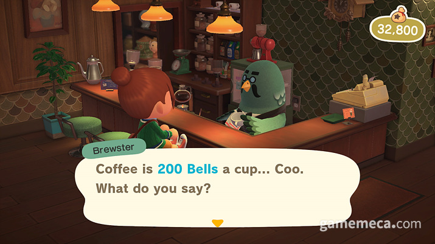
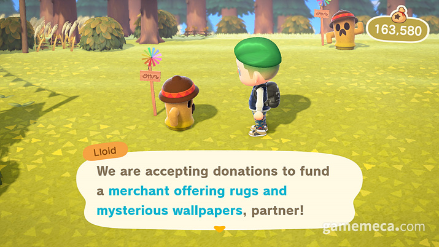
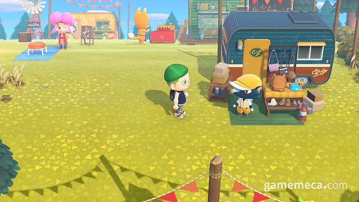
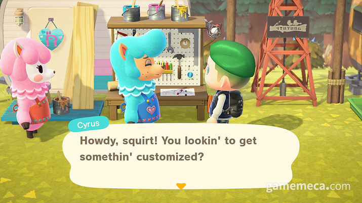
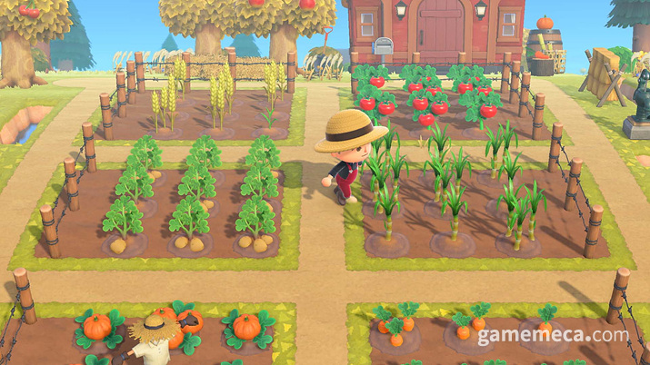
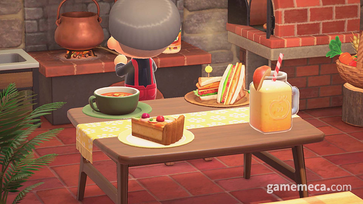
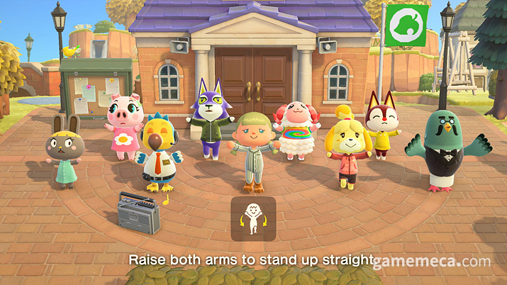
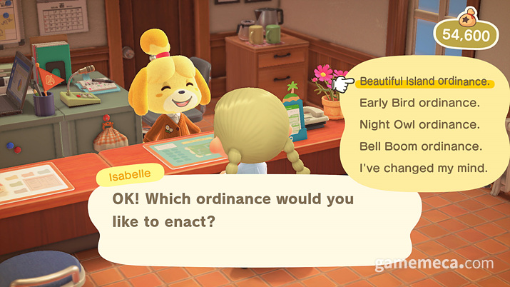
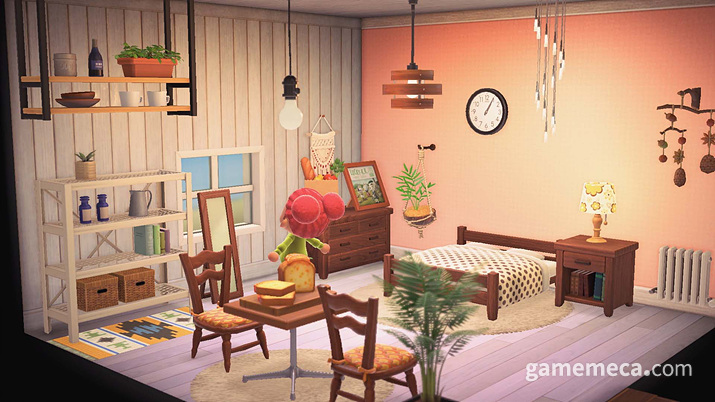

동물의숲 Ver2.0 업데이트 내용

커피를 즐길 수 있는 카페
외딴 섬으로 안내해주는 갑돌

파니엘의 섬에서 모금을 완료하면

이렇게 상점이 열린다

가구 리폼도 가능하다

섬에서 채소를 재배해서

음식을 만들어 먹을 수 있다

다같이 아침체조를 하거나

섬의 조례도 셜정할 수 있다

천장에 설치하는 가구와 벽마다 색이나 패턴을 다르게 설정할 수 있는 기능이 추가된다